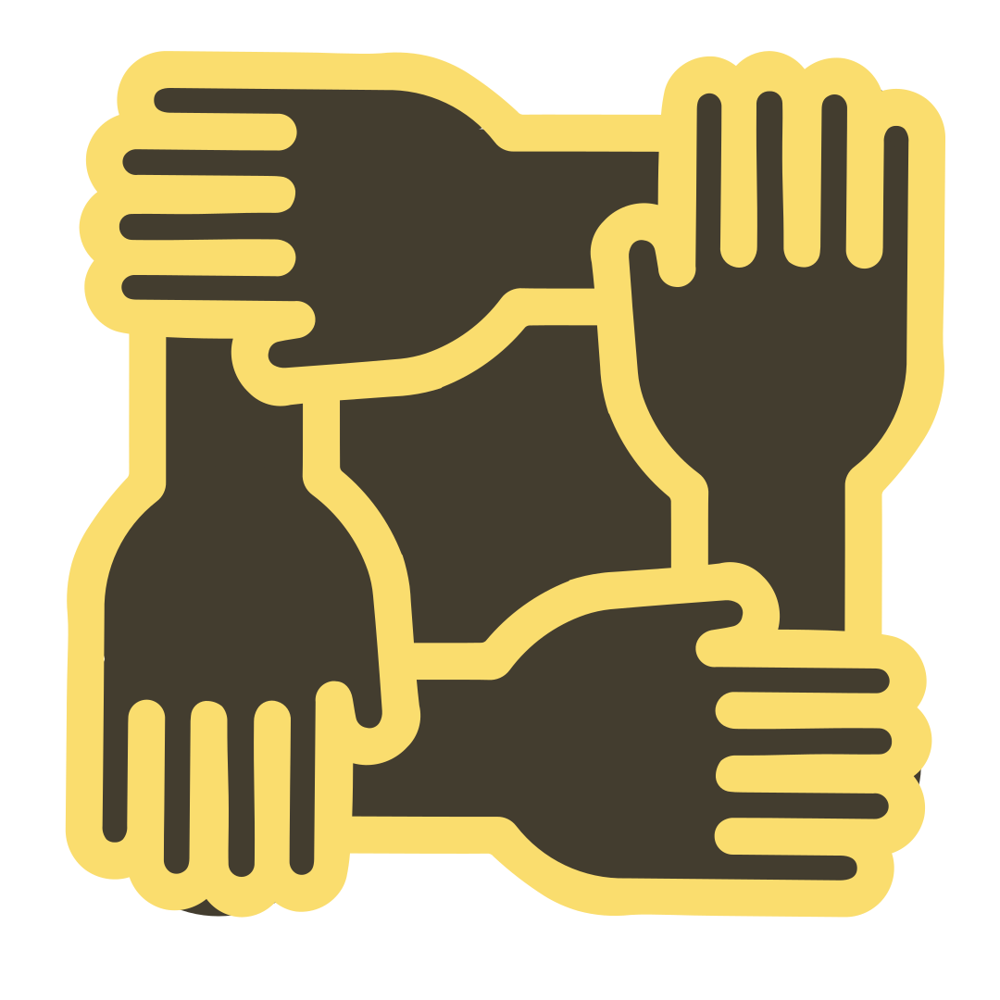
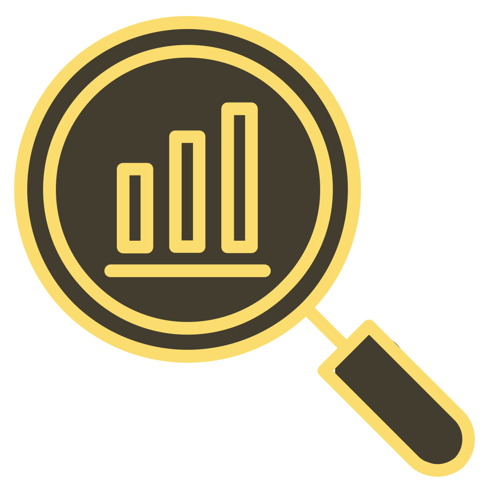
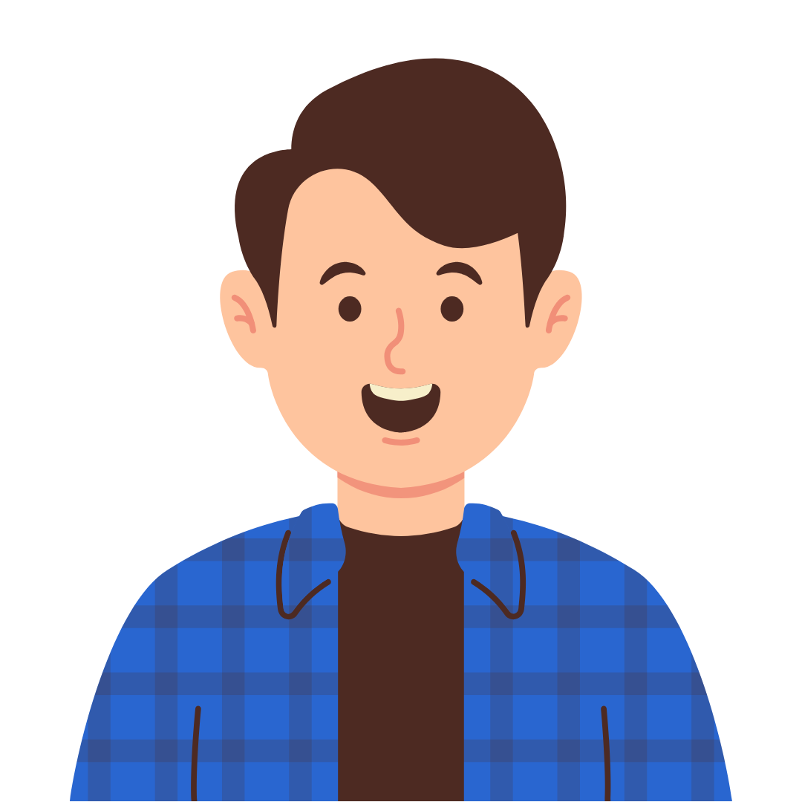

As an International Communications expert, I am committed to driving positive societal change in Ukraine, Europe, and beyond by connecting impact-focused institutions with their audiences. I aim to apply my expertise in marketing and international relations to foster innovative storytelling partnerships and revolutionize the ethical use of digital communication technologies to tackle urgent global challenges. I'm excited about the opportunity to join you for this very reason.
In this portfolio, I’m sharing key takeaways from my employment history and examples of my previous works. Let’s see how we can change the world together!
What I Do
Social Media Content Creation
Develop content calendars and craft posts that boost your presence on LinkedIn, Instagram, Facebook, X, Threads, and Bluesky.
Creative Writing
Tell stories that keep your audience coming back for more - through blogs, articles, website content, and email newsletters.

Community Engagement
Organize intercultural events to help you build trust with your community, specializing in activities for vulnerable children and youth.
Graphic Design
Deliver your messages with high-quality visual reports, infographics, one-sheets, presentations, and other graphic materials.

Data Analytics
Analyze your audience's needs and assess your marketing metrics to turn data into actionable plans that solve your challenges.
Multilingual Translation
Bridge language barriers as a translator between Ukrainian, English, and Russian, with plans to expand to French and Italian.
Testimonials
Elaine MacDonald - CEO, Knowledge Impact Network
I have hired both undergraduate and graduate school students with marketing majors to work at KIN, and Anastasiya has been my strongest intern. She is facile with all forms of digital communication (social media, web, email campaigns). Most importantly, she exhibited independent, critical thinking, applying judgement and context to decisions on when and what to publish. She took initiative with creating organizing frameworks for our communications and introduced new digital tools for our organization to leverage. She understood the need for different campaigns targeted at different audiences and was able to tailor messaging appropriately. Given my personal background as a former brand marketing leader at a major consumer packaged goods firm and strategic marketing consultant, my endorsement of Anastasiya’s skills does not come lightly.
Daniela la Foresta – Professor, University of Naples Federico II
Despite her busy schedule, Anastasiya has always kept a proactive and positive attitude, especially when working on group projects with her colleagues. Observing her ability to create a friendly environment in the team, encourage all members to speak up, and compromise, I realized just how remarkable of a leader she was. It is no wonder that her final group project turned out to be one of the best ever produced by the students of the *International Marketing* course.
Despite the time zone difference, Anastasiya was able to work remotely and meet all of her deadlines independently, showing strong time management and organizational skills. She also showed a great level of comfort working in English with the Feedback Labs team as well as with external partners in the domestic and international environment. Aside from her professional contributions to the team, she also offered fun discussion prompts at team meetings and thoughtful questions in response to others’ projects. I’m confident that the excellent work ethic Anastasiya has demonstrated during the course of her internship will carry over to future career opportunities.
Hanna Fedorova – Senior Lecturer, Karazin Kharkiv National University
In all her years at V. N. Karazin Kharkiv National University, Anastasiya’s never had a single grade below A (or Ukrainian 90/100), and the courses I taught weren’t an exception. Last semester, Anastasiya obtained a 100/100 in my International Communications module, owing to her critical thinking abilities. The analytical nature of the course required students to produce academic papers weekly, researching various theoretical and practical aspects of international communications and proposing ways to apply them to solve international political, societal, and business problems. Anastasiya’s creative approach to writing her works demonstrated her in-depth knowledge of the fundamental principles and current trends in both international communications and international relations, as well as a thorough understanding of their interconnectedness in today’s globalized world.

Vladyslav Dementiev – President, Young Agents of Change
Anastasiia distinguished herself by the ability to efficiently work in a team on group project and enrich the work of the organization. Thus Anastasiia was a diligent and well-organized intern, who demonstrated comprehensive preparation and always completed assignments in a timely manner with positive outcomes. She gained a solid understanding of civil society operation in Ukraine and experience in conducting activities aimed at strengthening civic engagement.
Elaine MacDonald - CEO, Knowledge Impact Network
I have hired both undergraduate and graduate school students with marketing majors to work at KIN, and Anastasiya has been my strongest intern. She is facile with all forms of digital communication (social media, web, email campaigns). Most importantly, she exhibited independent, critical thinking, applying judgement and context to decisions on when and what to publish. She took initiative with creating organizing frameworks for our communications and introduced new digital tools for our organization to leverage. She understood the need for different campaigns targeted at different audiences and was able to tailor messaging appropriately. Given my personal background as a former brand marketing leader at a major consumer packaged goods firm and strategic marketing consultant, my endorsement of Anastasiya’s skills does not come lightly.
Resume
Professional Experience
Communications Manager
Jun 2024 – Present
Facilitated Learning for Universal Sanitation and Hygiene (FLUSH)
Social Media Intern
Feb 2024 – May 2024
Facilitated Learning for Universal Sanitation and Hygiene (FLUSH)
Marketing Summer Intern
Jun 2022 – Oct 2022
Knowledge Impact Network
Marketing & Communications Intern
Sep 2021 – Dec 2021
Feedback Labs
Volunteer Coordinator (Intern)
Nov 2020 – Feb 2021
Young Agents of Change
Education
V. N. Karazin Kharkiv National University
Sep 2020 — Jul 2024
Bachelor's Degree (Honors), International Information and International Communications
Università degli Studi di Napoli Federico II / Collegio Universitario di Merito Villalta
Feb 2023 — Jul 2023
Exchange semester in Naples, Italy
European School of Political and Social Sciences
Sep 2022 — Dec 2022
Exchange semester in Lille, France
Dolynska School No. 4
Sep 2009 – Jul 2020
Complete General Secondary Education (Honors)
Kofa High School / Future Leaders Exchange (FLEX) Program
Aug 2019-Apr 2020
Exchange year in Yuma, USA
Volunteering
Refugee Integration Facilitator
Nov 2024 – Dec 2024
FITT (Timis County Youth Foundation) / European Solidarity Corps
Team Member
Feb 2021 – Jun 2021
AIESEC
English to Ukrainian Translator
Apr 2021 – May 2021
Children with FAS
Animal Caretaker
Jan 2020 - Apr 2020
Humane Society of Yuma
Community Engagement Officer
Sep 2018 – Jun 2019
Youth Committee for Civic Engagement / US Peace Corps